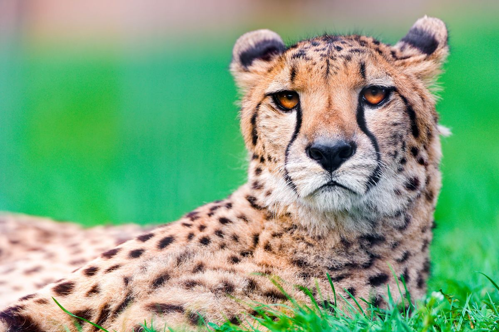

animals are categorised into two:
These are animals that have been tamed and kept by humans as work animal,food source,or pet.They include:
Now,lets take a look at some domesticated animals
Domestic dogs are mostly kept as pets,though many breeds are capable of surving on their own, whether it is in a forest or on city streets

Domestic cats are characterized by supple low-slung bodies,finely moled heads,long tails that aid in balanced,and specialized teeth and claws that adapt them admirably to a life of active hunting.

Sheep or domestic sheep(ovis aries) are domesticated,ruminantmammals typically kept as livestock

These are mammals,birds,fish,or other creatures of a wild nature endowed with sensetion and the power of voluntary motion.Example of wild animals are:
Now,let`s take a look at some domesticated animals
The lion is a large cat of the genus panthera. It has a musculer,broad-chested body,short,rounded head,round ears,and a hairy tuft at the end of its tail.

There are three species-spotted,brown,and striped. spotted hyenas are the largest of the three. They are fairly large in build and have relatively short toros with lower hindquarters,and sloping backs.They have exellent night-time vision and hearing.Hyenas have long forelegs and powerful neck and shoulders for dimembering and carrying prey.

A cheetah is a large cat and native to Africa and central Iran. Itis the fastest land animal,estimated to be capable of running at 80 to 128km/h
